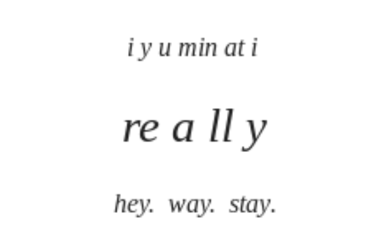
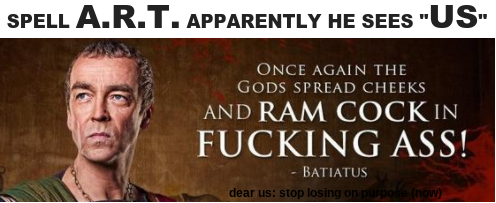

 <script>
  (function(i,s,o,g,r,a,m){i['GoogleAnalyticsObject']=r;i[r]=i[r]||function(){
  (i[r].q=i[r].q||[]).push(arguments)},i[r].l=1*new Date();a=s.createElement(o),
  m=s.getElementsByTagName(o)[0];a.async=1;a.src=g;m.parentNode.insertBefore(a,m)
  })(window,document,'script','https://www.google-analytics.com/analytics.js','ga');
<p>ga('create', 'UA-74743044-2', 'auto');
ga('send', 'pageview');</p>
</script></head>
<body style="width: 100%; margin: 0 auto; text-align: left; font-family: Arial;">
<center>
<script type="text/javascript">
    google_ad_client = "ca-pub-9608809622006883";
    google_ad_slot = "4355365452";
    google_ad_width = 728;
    google_ad_height = 90;
</script>
<!-- leaderboard
<script type="text/javascript" src="//pagead2.googlesyndication.com/pagead/show_ads.js"> -->
</script>
<br />

</center>
<!DOCTYPE HTML>
<html lang="en">
    <head>
        <meta charset="UTF-8">
        <title>IYYYO - </title>
        <meta content="text/html; charset=utf-8" http-equiv="Content-Type">
        <meta name="description" content="">
        <meta name="viewport" content="width=device-width, initial-scale=1">

        <base href="">

        <link rel="stylesheet" href="book.css">
        <link href="https://fonts.googleapis.com/css?family=Open+Sans:300italic,400italic,600italic,700italic,800italic,400,300,600,700,800" rel="stylesheet" type="text/css">
        <link href="https://fonts.googleapis.com/css?family=Source+Code+Pro:500" rel="stylesheet" type="text/css">

        <link rel="shortcut icon" href="favicon.png">

        <!-- Font Awesome -->
        <link rel="stylesheet" href="../maxcdn.bootstrapcdn.com/font-awesome/4.3.0/css/font-awesome.min.css">

        <link rel="stylesheet" href="highlight.css">
        <link rel="stylesheet" href="tomorrow-night.css">
        <link rel="stylesheet" href="ayu-highlight.css">

        <!-- Custom theme -->
        

        

        <!-- Fetch Clipboard.js from CDN but have a local fallback -->
        <script src="../cdn.jsdelivr.net/clipboard.js/1.6.1/clipboard.min.js"></script>
        <script>
            if (typeof Clipboard == 'undefined') {
                document.write(unescape("%3Cscript src='clipboard.min.js'%3E%3C/script%3E"));
            }
        </script>

        <!-- Fetch JQuery from CDN but have a local fallback -->
        <script src="../code.jquery.com/jquery-2.1.4.min.js"></script>
        <script>
            if (typeof jQuery == 'undefined') {
                document.write(unescape("%3Cscript src='jquery.js'%3E%3C/script%3E"));
            }
        </script>

        <!-- Fetch store.js from local - TODO add CDN when 2.x.x is available on cdnjs -->
        <script src="store.js"></script>

    </head>
    <body class="light">
        <!-- Set the theme before any content is loaded, prevents flash -->
        <script type="text/javascript">
            var theme = store.get('mdbook-theme');
            if (theme === null || theme === undefined) { theme = 'light'; }
            $('body').removeClass().addClass(theme);
        </script>

        <!-- Hide / unhide sidebar before it is displayed -->
        <script type="text/javascript">
            var sidebar = store.get('mdbook-sidebar');
            if (sidebar === "hidden") { $("html").addClass("sidebar-hidden") }
            else if (sidebar === "visible") { $("html").addClass("sidebar-visible") }
        </script>

        <div id="sidebar" class="sidebar"><script src="../addsearch.com/js/index.html?key=1665711c9123bf7488b1b5127916aeff"></script>
            <ul class="chapter"><li><a href="ARTIMESIAN.html"><strong>1.</strong> OUR TIME, HERE</a></li><li><a href="MECHADLZIDECK.html"><strong>2.</strong> MECHADLZIDECK</a></li><li><a href="DEVLANEU.html"><strong>3.</strong> THE DEVLANEU</a></li><li><a href="SAMSYUCH.html"><strong>4.</strong> SAMYACH: ADVENT 7.0</a></li><li><a href="SOUNDCHECK.html"><strong>5.</strong> SOUND CHECK</a></li><li><a href="ECC911.html"><strong>6.</strong> ECC ENIACCK</a></li><li><a href="FRUMLEGT.html"><strong>7.</strong> PRIVET, FRUMLEGT AN</a></li><li><a href="SCIZZARS.html"><strong>8.</strong> INTERSTITIAL</a></li><li><a href="ARTANWORDS.html"><strong>9.</strong> ART AN S WORD</a></li><li><a href="REMOLUSTIAN.html"><strong>10.</strong> REMO LUCIAN</a></li><li><a href="CHRYOHOLY.html"><strong>11.</strong> SLUR; E, SIS</a></li><li><a href="SACREDSOUL.html"><strong>12.</strong> SACREDOULS</a></li><li><a href="RELEVATION.html"><strong>13.</strong> RE LEV ICNOHSER</a></li><li><a href="MALORKAY.html"><strong>14.</strong> MALORKAY ET LUX</a></li><li><a href="N8SRADIN.html"><strong>15.</strong> BLOOD RAYNE</a></li><li><a href="MISSISSIPPI.html"><strong>16.</strong> MISSESSIPI</a></li><li><a href="CONNETICUT.html"><strong>17.</strong> CONNECT UC IT</a></li><li><a href="NEMEC.html"><strong>18.</strong> CEMENTARY REPRINT</a></li><li><a href="INDIANA.html"><strong>19.</strong> SHADY PINES</a></li><li><a href="BLISS.html"><strong>20.</strong> BLISS/ALO</a></li><li><a href="KISMET.html"><strong>21.</strong> KISMET/ALO</a></li><li><a href="OUITHEPPL.html"><strong>22.</strong> OUITHEPPL/ALO</a></li><li><a href="KEYNES2.html"><strong>23.</strong> KEYNES2/ALO</a></li><li><a href="JERUSALEM.html"><strong>24.</strong> JERUSALEM/ALO</a></li><li><a href="2017-09-29-duck-duck-golden-egg.html"><strong>25.</strong> DUCKDUCKGO/AU</a></li><li><a href="VIETUCCIMACH.html"><strong>26.</strong> SOBIT QCKLY FRED</a></li><li><a href="KEYNES.html"><strong>27.</strong> KEYNES/ALO</a></li><li><a href="MECHACHI.html"><strong>28.</strong> I KISS AND DANCE</a></li><li><a href="ENZOSPUB.html"><strong>29.</strong> EZNO'S STAINED GLASS</a></li><li><a href="SKURMAWEH.html"><strong>30.</strong> PARTING C'S AQUA N</a></li><li><a href="3ADJUROLT.html"><strong>31.</strong> 3 BUECEDUAT, ME JUST</a></li><li><a href="ADAMGOT2BJS.html"><strong>32.</strong> TWO, ONLY TWO</a></li><li><a href="RICKIMOROLED.html"><strong>33.</strong> CIA, K, &amp; MOR, TY</a></li><li><a href="ASMODALIANIADIAM.html"><strong>34.</strong> HEY PLANETH ADAM &amp; HOSE</a></li><li><a href="IMAGULATKA.html"><strong>35.</strong> HI MOM GRU POTATO?</a></li><li><a href="TOASTRAM.html"><strong>36.</strong> HI &quot;TO AST&quot; ROAR M</a></li><li><a href="CRUELGENIAD.html"><strong>37.</strong> CRUEL GEN I AD</a></li><li><a href="IRMAX.html"><strong>38.</strong> ITL IRMAX ATLA</a></li><li><a href="B2BIONIC.html"><strong>39.</strong> BlUr BON IONIC</a></li><li><a href="LEDMCAVENDESH.html"><strong>40.</strong> CAVE END VILESH</a></li><li><a href="INTRASINAMUS.html"><strong>41.</strong> NUDVREAD TEST AM, E, &amp; T</a></li><li><a href="SKIRMISH.html"><strong>42.</strong> SIREN S KIRMISH</a></li><li><a href="MOROKSRIG.html"><strong>43.</strong> MOROS KO RIG</a></li><li><a href="CRYAMELYON.html"><strong>44.</strong> CRONAMELYON</a></li><li><a href="INCASEBAIT.html"><strong>45.</strong> INCASEBAIT</a></li><li><a href="MEVATHI.html"><strong>46.</strong> MEVATHI</a></li><li><a href="VESUBIACEIUM.html"><strong>47.</strong> INTISMO NOCTE TERMINUS SEMPITERNUM</a></li><li><a href="ROUTARE.html"><strong>48.</strong> WALL 2 STAY? STALK ME</a></li><li><a href="HALLOWE2R.html"><strong>49.</strong> HAYOM VAT OW</a></li><li><a href="TION.html"><strong>50.</strong> THE TION-NING OF HA-ADAM</a></li><li><a href="GRENORADINE.html"><strong>51.</strong> G RE NAD IN E &amp; AM B R O Si A</a></li><li><a href="BELINSKY.html"><strong>52.</strong> BELINSKY</a></li><li><a href="REASON.html"><strong>53.</strong> HELL OR HIGH TREASON</a></li><li><a href="VESPERA.html"><strong>54.</strong> U C PER I</a></li><li><a href="ORTANIS.html"><strong>55.</strong> ALKADAM OR TANIS</a></li><li><a href="MOLASSES.html"><strong>56.</strong> SLOW AS MOLASSES, DECK</a></li><li><a href="VERADONUM.html"><strong>57.</strong> VER BETT DO N, MMMM?</a></li><li><a href="IT.html"><strong>58.</strong> IT</a></li><li><a href="MARSHALL.html"><strong>59.</strong> MARCH -> ALL</a></li><li><a href="BETHESDAY.html"><strong>60.</strong> BET HES DAY</a></li><li><a href="SALTLINE.html"><strong>61.</strong> SALT LINE</a></li><li><a href="SAYFREED.html"><strong>62.</strong> AM &quot;AN&quot; DUH..</a></li><li><a href="CKIMPLER.html"><strong>63.</strong> /|\ AT ARI</a></li><li><a href="PENCE.html"><strong>64.</strong> COMMON CENTS</a></li><li><a href="TY.html"><strong>65.</strong> TO LC WEUROME</a></li><li><a href="ALLTA.html"><strong>66.</strong> ITS TURMERIC TIRE</a></li><li><a href="SECORDANOLIVED.html"><strong>67.</strong> SECORD AND NORTH</a></li><li><a href="FIRST.html"><strong>68.</strong> FIRST AND FED</a></li><li><a href="CLEARYBLVD.html"><strong>69.</strong> CLEAR Y BLVD</a></li><li><a href="WISDATAM.html"><strong>70.</strong> WISDOM</a></li><li><a href="OCADSWAY.html"><strong>71.</strong> CONVEY</a></li><li><a href="LANDOH.html"><strong>72.</strong> SLANDOH</a></li><li><a href="FINALE.html"><strong>73.</strong> FINALLY</a></li><li><a href="H.html"><strong>74.</strong> gnil-c-w/H.html</a></li><li><a href="CODACUS.html"><strong>75.</strong> ILIT CUS</a></li><li><a href="CHARMADA.html"><strong>76.</strong> C NO H ARM</a></li><li><a href="SEVENTY.html"><strong>77.</strong> SEVENTY</a></li><li><a href="MEALLTERY.html"><strong>78.</strong> MEA ___ LET UR Y</a></li><li><a href="TAXONOMY.html"><strong>79.</strong> TA X ON O MY T</a></li><li><a href="NASHOWER.html"><strong>80.</strong> NA SHOW ERA</a></li><li><a href="TOXODUSK.html"><strong>81.</strong> OXODUS TORK?</a></li><li><a href="ARFAXAD.html"><strong>82.</strong> SPARTIFACTS</a></li><li><a href="SINGLEPTO.html"><strong>83.</strong> C AT LET RS</a></li><li><a href="LETITRAIN.html"><strong>84.</strong> LET IT RAIN</a></li><li><a href="BRIMSTONE.html"><strong>85.</strong> Fe Si ISTONE</a></li><li><a href="REDASSHIT.html"><strong>86.</strong> REDSASHIT</a></li><li><a href="HIGHERA.html"><strong>87.</strong> ROAD SALT: OSAMNaKE D</a></li><li><a href="ADUNCALIFT.html"><strong>88.</strong> THE HERALD OF JC2IKP</a></li><li><a href="RATOXIT.html"><strong>89.</strong> TO X HOLA</a></li><li><a href="ADIOSAS.html"><strong>90.</strong> ADIODAS</a></li><li><a href="XOXO.html"><strong>91.</strong> XOXPA</a></li><li><a href="KANSAS.html"><strong>92.</strong> KANSAS</a></li><li><a href="RESWOH.html"><strong>93.</strong> RE SW? OH</a></li><li><a href="YOIBLING.html"><strong>94.</strong> Y O I BLING ?</a></li><li><a href="MALOVIOUS.html"><strong>95.</strong> FI CVS ET MAL Q</a></li><li><a href="HOWIE.html"><strong>96.</strong> HAWAII</a></li><li><a href="GJALLARHORN.html"><strong>97.</strong> ALL OUR HORN</a></li><li><a href="JESHOW.html"><strong>98.</strong> JERUSALEM</a></li><li><a href="CHALK.html"><strong>99.</strong> CHALK</a></li><li><a href="TAYLOR.html"><strong>100.</strong> KISS ME TAY</a></li><li><a href="FUCK.html"><strong>101.</strong> FUCK</a></li><li><a href="CONFESSION.html"><strong>102.</strong> CONFESSION</a></li><li><a href="SERENADE.html"><strong>103.</strong> SERENADE</a></li><li><a href="PULL.html"><strong>104.</strong> PULL</a></li><li><a href="MUAH.html"><strong>105.</strong> M U AH</a></li><li><a href="PERSEUS.html"><strong>106.</strong> PER SE YOU</a></li><li><a href="THUNDERSTAND.html"><strong>107.</strong> THUNDERSTAND</a></li><li><a href="CURSOR.html"><strong>108.</strong> LAYLOT</a></li><li><a href="ACESHI.html"><strong>109.</strong> ACESHI</a></li><li><a href="IOWA.html"><strong>110.</strong> IOWA</a></li><li><a href="YAT.html" class="active"><strong>111.</strong> IYYYO</a></li><li><a href="SPEECH.html"><strong>112.</strong> SPCH2</a></li><li><a href="OFIVES.html"><strong>113.</strong> FIVE</a></li><li><a href="FOUR.html"><strong>114.</strong> FUIR</a></li><li><a href="GATE.html"><strong>115.</strong> THE GATE TO FREEDOM ETLROI</a></li><li><a href="MYLIFE.html"><strong>116.</strong> MYLIFE ... THE MICROCOSM OTM</a></li><li><a href="TISCOMING.html"><strong>117.</strong> COMING MA</a></li><li><a href="DESSERT.html"><strong>118.</strong> DEXSERT</a></li><li><a href="EVERWICK.html"><strong>119.</strong> EVOURWICK</a></li><li><a href="HASHEMESH.html"><strong>120.</strong> HASHOWESH NAME ISH</a></li><li><a href="CINOIZE.html"><strong>121.</strong> CINOIZE</a></li><li><a href="HAMMER.html"><strong>122.</strong> HAMMER</a></li><li><a href="HAMP.html"><strong>123.</strong> HAMP</a></li><li><a href="FLICKDABIC.html"><strong>124.</strong> FLIPDABIC</a></li><li><a href="BYNOBIANCA.html"><strong>125.</strong> R U B Y</a></li><li><a href="ATITEN.html"><strong>126.</strong> ATIRX</a></li><li><a href="HASHEMESHIC.html"><strong>127.</strong> SUNFIRE</a></li><li><a href="FLYER.html"><strong>128.</strong> FLYPER</a></li><li><a href="SAUSAGE.html"><strong>129.</strong> ME AN U STAGE</a></li><li><a href="HYAMDAI.html"><strong>130.</strong> HELLO WORLD</a></li><li><a href="ERICHOW.html"><strong>131.</strong> RD 2 RR Y</a></li><li><a href="BERESHIT.html"><strong>132.</strong> DEN</a></li><li><a href="ADAMSROD.html"><strong>133.</strong> ROD</a></li><li><a href="TION.html"><strong>134.</strong> IT IS TIME</a></li><li><a href="CURE.html"><strong>135.</strong> THE CURE</a></li><li><a href="WHO.html"><strong>136.</strong> WHO AGAIN?</a></li><li><a href="SERDEN.html"><strong>137.</strong> SERDENICITY</a></li><li><a href="CLIMAX.html"><strong>138.</strong> IMUS FI CLI MAX</a></li><li><a href="SOIS.html"><strong>139.</strong> SOIS HISTER Y</a></li><li><a href="CHOPARTIN.html"><strong>140.</strong> CHOPARTIN</a></li><li><a href="OMEALFHT.html"><strong>141.</strong> OMEALFHT OME ALF HOLY TR</a></li><li><a href="RIGELA.html"><strong>142.</strong> RIGEL, THE FOOT OF OUR CHRIST</a></li><li><a href="HADID.html"><strong>143.</strong> DO HADID DID I? !?</a></li><li><a href="MUASEEKHART.html"><strong>144.</strong> SEEKART YOUR ANSWERS</a></li><li><a href="NITY.html"><strong>145.</strong> NITY ET RU NEO? ELVIS? ADAM?</a></li><li><a href="INTRODUCTION.html"><strong>146.</strong> INTRAD UCA, DO NOSH</a></li></ul>
        </div>

        <div id="page-wrapper" class="page-wrapper">

            <div class="page" tabindex="-1">
                
                <div id="menu-bar" class="menu-bar">
                    <div class="left-buttons">
                        <i id="sidebar-toggle" class="fa fa-bars" title="Toggle sidebar"></i>
                        <i id="theme-toggle" class="fa fa-paint-brush" title="Change theme"></i>
                    </div>

                    <h1 class="menu-title"></h1>

                    <div class="right-buttons">
                        <a href="sheolyit.html">
                            <i id="print-button" class="fa fa-print" title="Print this book"></i>
                        </a>
                    </div>
                </div>

                <div id="content" class="content"><center><p>I am accepting char<a href=".ithehe.lamc.la">itable dona</a>tions,. <br>ETH: 0x66e2871ef39334962fb75ce34407f825d67ec434 | BTC: 38B6vGaqNvMyTtoFEZPmNvMS7icV6ZnPMm | xDAI: 0x66e2871ef39334962fb75ce34407f825d67ec434</p></center>

<div id="disqus_thread"></div>
<script>

var disqus_config = function () {
this.page.identifier = "YAT.html"; 
};

(function() { // DON'T EDIT BELOW THIS LINE
var d = document, s = d.createElement('script');
s.src = 'https://dotty-sign2r-jenmar.disqus.com/embed.js';
s.setAttribute('data-timestamp', +new Date());
(d.head || d.body).appendChild(s);
})();
</script>

<script type="text/javascript">
    google_ad_client = "ca-pub-9608809622006883";
    google_ad_slot = "4355365452";
    google_ad_width = 728;
    google_ad_height = 90;
</script>

<script src="../pagead2.googlesyndication.com/pagead/show_ads.js" type="text/javascript">
</script>

                    <div dir="ltr">
<div class="gmail_quote">
<div dir="ltr">
<div class="gmail_quote">
<div dir="ltr">
<div class="gmail_quote">
<div dir="ltr">
<div class="gmail_quote">
<div dir="ltr">
<div>
<div class="ii gt " id=":jj" style="background-color: white; color: #222222; direction: ltr; font-family: arial, sans-serif; font-size: 12.8px; margin: 5px 15px 0px 0px; padding-bottom: 5px; position: relative;">
<div class="a3s aXjCH m160d8dd052f2863d" id=":ji" style="overflow: hidden;">
<div dir="ltr">
<div class="gmail_quote">
<div dir="ltr">
<div class="gmail_quote">
<div dir="ltr">
<div class="gmail_quote">
<div dir="ltr">
<div style="text-align: center;"><a data-saferedirecturl=".ww.google.com/url?hl=en&amp;q=.ink.gmapp4.net/x/c?c%3D1879348%26l%3Dad6d43ac-7071-4c99-a89c-0f5c74094a8b%26r%3D1d8b51b6-9a90-412b-91a1-6c5888489a47&amp;source=gmail&amp;ust=1515553256636000&amp;usg=AFQjCNGWgDXpx7uAGVPSMIIscxgEZt0V2Q" href="CHALK.html" style='color: #4183c4; font-family: "Open Sans", sans-serif; font-size: 50px; text-decoration-line: none;' target="_blank">an</a><span style='color: #333333; font-family: "Open Sans", sans-serif; font-size: 50px;'>&middot;</span><b style='color: #333333; font-family: "Open Sans", sans-serif; font-size: 50px;'><i>ok</i></b><span style='color: #333333; font-family: "Open Sans", sans-serif; font-size: 50px;'>&middot;</span><a data-saferedirecturl=".ww.google.com/url?hl=en&amp;q=.ink.gmapp4.net/x/c?c%3D1879348%26l%3D7fc71d94-7624-49a2-bee2-c3488fef8567%26r%3D1d8b51b6-9a90-412b-91a1-6c5888489a47&amp;source=gmail&amp;ust=1515553256636000&amp;usg=AFQjCNFcXBghqurn-_qRcj5Z7nCF2eRwAg" href=".amc.la//biblehub.com/hebrew/595.htm" style='color: #4183c4; font-family: "Open Sans", sans-serif; font-size: 50px; text-decoration-line: none;' target="_blank">hi</a></div>
</div>
</div>
</div>
</div>
</div>
</div>
</div>
</div>
</div>
<div style="text-align: justify;">As a little bit of errata, I added these two pieces to the &quot;<a href=".amc.la//CLIMAX.html" target="_blank">Hey Zeus</a>&quot; stuff,&nbsp;<strong>anokhi</strong>, which means&nbsp;<em>&quot;I&quot;&nbsp;</em>and is the first word God spoke in Exodus was my first &quot;clue&quot; I think, anyway, to the two letter key of &quot;an&quot; which I usually read just like that, but I&#39;ve said &quot;Adam now&quot; a few times and it happens to be the first and last letter of my first and last name--in this place where words are maps of the traversal through the book or maze, it&#39;s probably meaningful.&nbsp; &nbsp;The other one is &quot;<b>hic summus</b>&quot; which means &quot;here we are&quot; in Latin and keys pretty nicely to the union of my two shoulder tattoos; also there&#39;s &quot;Hi-C&quot; (or,&nbsp;<em>how I see</em>) in there with sunny delight.&nbsp; You might see that the &quot;an&quot;&#39;s here should a unified set of myths and &quot;playbook&quot; connecting the NT and Exodus sort of revolving around &quot;everything messianic&quot; and you will probably see that has everything to do with&nbsp;<em><a href="GATE.html" target="_blank">you and I.</a>&nbsp;&nbsp;</em>It&#39;s English too threaded throughout Latin, well--close to English enough to imagine that &quot;<strong>exceptusque conditoribus</strong>&quot; is an oft-repeated threat to the &quot;exact same&quot; (really I shouldn&#39;t say that) &quot;us&quot; that heard a song about &quot;<a href=".ww.youtube.com/watch?v=Fr_CHOxSyc8&amp;index=5&amp;list=PLgYKDBgxsoMNvBS6k4NffQQnobyUqXuMh" target="_blank">just a stranger on a bus</a>&quot; and even though I read two paths through this map of Exodus and language both paths have something to do with the age of Aquarius.&nbsp; &nbsp; Anyway here&#39;s those two additions, they&#39;re not new, but the connection to all the &quot;hey can you see me?&quot; stuff is, I guess.&nbsp; Oh, that Latin phrase means &quot;creators&quot; or &quot;founders&quot; as in... of Heaven.&nbsp;&nbsp;</div>
</div>
<div style="text-align: center;">&nbsp;</div>
<div style="text-align: center;">
<div style='color: #333333; font-family: "Open Sans",sans-serif; font-size: medium;'><a href="2017-06-30-id5-i-am-stone.html" style="color: #4183c4; text-decoration-line: none;" target="_blank"></a></div>
<div style='color: #333333; font-family: "Open Sans",sans-serif; font-size: medium;'>
<div style="font-size: 12.8px;"><strong><span style='font-family: "arial black" , sans-serif; font-size: x-large;'><em>H &nbsp;I</em>&nbsp;&nbsp;C &nbsp; &nbsp;S &nbsp;U &nbsp;M &nbsp; M &nbsp;<em>U &nbsp;S</em></span></strong></div>
</div>
<div style='color: #333333; font-family: "Open Sans",sans-serif; font-size: medium;'>&nbsp;</div>
<div style='color: #333333; font-family: "Open Sans",sans-serif; font-size: medium; text-align: start;'>
<div style="font-size: 12.8px; text-align: center;"><em><span style='font-family: "arial black" , sans-serif; font-size: medium;'>&nbsp; &nbsp; &nbsp; &nbsp; &nbsp; &nbsp; &nbsp;Sal<span style="color: rgb(11 , 83 , 148);">u</span><strong><span style="color: rgb(56 , 118 , 29);">tat</span></strong>us<span style="color: rgb(230 , 145 , 56);">on</span>sh<span style="color: rgb(153 , 153 , 153);">o</span><span style="color: rgb(243 , 243 , 243);">u</span><span style="color: rgb(238 , 238 , 238);">l</span><span style="color: white;">ders</span></span></em></div>
<div style="font-size: 12.8px;">&nbsp;</div>
<div style="font-size: 12.8px;">
<center>
<div style="text-align: justify; width: 250px;"><span class="m_-6562828785052261968m_-5399572790918214253m_4170475452825535670gmail-m_5731276207286340044gmail-">Then I will set the key of the house of David on his shoulder, When he opens no one will shut, When he shuts no one will open. &nbsp;</span></div>
<div style="text-align: justify; width: 250px;">&nbsp;</div>
<div style="text-align: right; width: 250px;"><span class="m_-6562828785052261968m_-5399572790918214253m_4170475452825535670gmail-m_5731276207286340044gmail-">Isaiah 22:22</span></div>
</center>
</div>
</div>
</div>
<div>&nbsp;
<div style="text-align: justify;">I added a sort of &quot;<a href=".amc.la//CLIMAX.html" target="_blank">hello</a>, <a href=".amc.la//SPEECH.html" target="_blank">goodby</a>e., p<a href=".amc.la//YAT.html" target="_blank">eace</a>&quot; theme to the last three chapters of&nbsp;<span style='font-family: "comic sans ms" , sans-serif;'>SHEOLYIT,</span><span style='font-family: "arial" , "helvetica" , sans-serif;'><strong>&nbsp;</strong>and was myself astounded at the connection to this message and hidden language, and really exactly what&#39;s going on around us--or with us--right this very moment to the word &quot;hey, way&quot; and how the word &quot;really&quot; deciphers those two particular keys to the problem and the solution as seeing &quot;hell&quot; and &quot;hey&quot; together with overcoming the &quot;wall&quot; is the &quot;way.&quot;&nbsp; &nbsp;At least that&#39;s how I&#39;m pl<strong>all</strong>ing it.</span></div>
</div>
<div><a href=".ww.youtube.com/watch?v=n6P0SitRwy8"></a>
<div style="text-align: center;"><a href=".ww.youtube.com/watch?v=n6P0SitRwy8"></a></div>
<a href=".ww.youtube.com/watch?v=n6P0SitRwy8"></a></div>
<div>
<div style="text-align: justify;">I&#39;m standing here reflecting on what I&#39;ve sent, and still without shame or doubt I certainly think that what I&#39;ve displayed or tried to show us is that there is something significantly more grotesque going on between the&nbsp;<strong>mirror and the wall</strong>&nbsp;than the &quot;marred visage of Jesus Christ;&quot; something I won&#39;t discount or take from the opposing argument you would not have seen at all, or would have had a very difficult time discovering or understanding had we not expected such lustrous greatness from the character&nbsp;<span style='font-family: "comic sans ms" , sans-serif;'><strong>cum</strong>&nbsp;boy wonder&nbsp;</span><span style='font-family: "arial" , "helvetica" , sans-serif;'>and instead received something as controversial as a classy attack on what appears to be a feigned movement of 1950 era &quot;wholesomeness&quot;&nbsp; by pointing out the light of the Holy&nbsp;<a href="HOSEA.html" target="_blank">Ho-L</a>&nbsp;in wholesome and the &quot;ass&quot; staring at us in the name of Uranus and the heart of the word &quot;classic.&quot;&nbsp; The real point I am trying to drive home is that the attempts to censor this message are something more than a small mistake--what the opposition to the truth here in this place fails to realize is that to hide something etched into our language like this would eventually require it&#39;s removal, and that would functionally alter your souls and who you are more than you can imagine.&nbsp; It is really nothing less than attempted suicide ...&nbsp;<em>of all</em>&nbsp;.. to be attempting to suppress the &quot;sight&quot; of this message--granted it was hidden from us for so long to bring us to this place and this conversation about what a soul really means.</span></div>
<div style="text-align: justify;">&nbsp;</div>
<div style="text-align: justify;"><span style='font-family: "arial" , "helvetica" , sans-serif;'>I mentioned changing the signs of John Dancock Investments in an earlier message; and to bring that point further home--it&#39;s been shown very clearly to me and probably to you as well that the signature on the Declaration of Independence could be just as easily changed; and in your minds, in your memories could be altered just as easily as wiping a chalk board and penning a &quot;d&quot; over that fancy old &quot;h.&quot;&nbsp; The conversations you&#39;ve had are not so easy to mold, and anyone that noticed &quot;hand&quot; in Hancock before--or after--reading these messages and thinking or talking about it would probably see a significant change of &quot;self&quot; if there was an attempt to change it.&nbsp; Here we are though, looking at what appears to be the most significant change of &quot;self&quot; anyone on the planet has ever seen--happening en masse--and in secret, and all seemingly related to the disclosure that we shouldn&#39;t do things like that in secret; or rapidly, or without an understanding of what&#39;s going on and guidance or wisdom from people who might have gone through the exact same thing once or twice before.&nbsp;&nbsp;</span></div>
<div style="text-align: justify;">&nbsp;</div>
<div style="text-align: justify;"><span style='font-family: "arial" , "helvetica" , sans-serif;'>Anyway, quite a bit of what we&#39;re looking at falls into those two letters that begin the word &quot;prison&quot; and mean &quot;press and release&quot; to me; and quite a bit of what&#39;s happening around me and to me is so very upsetting that I think that it would be a complete failure of creation itself if we were to come out of this situation without a full understanding of exactly what it is that those three words mean; and a very good likelihood&nbsp;that what&#39;s gone on here has been successful in ensuring that we will find freedom from slavery and control, and that we will will strive towards transparency and openness instead of secrecy and silence in the future--just to name a few of the very sick qualities of this cloud of darkness.&nbsp; &nbsp;I see a place that I believe is designed to show us quite a few of the mistakes that have been made in the past and to instill a very real and &quot;natural-ish&quot; aversion to them continuing; things like Hell ... and as a litmus test for where we really are along this path, if we don&#39;t &quot;see hell here&quot; we are blind, and if that doesn&#39;t make us want to ensure that &quot;hell&quot; is something that we here in this place are primarily responsible for stopping all of creation from experiencing; then we have lost the greatest gift we could possibly have been given.</span></div>
</div>
<div>&nbsp;</div>
<div style="text-align: center;"><a href=".ww.youtube.com/watch?v=NJEdsES97rk"></a></div>
<div style="text-align: center;"><a href=".ww.youtube.com/watch?v=cnnlI4PGxCo"></a><br />
&nbsp;</div>
<div style="text-align: left;">
<div style="text-align: justify;">I&#39;m in a strange place, looking at where this message that I believe you are driving has taken us--and I feel a new closeness to these two scenes in particular; the first from the Fifth Element where a &quot;kiss&quot; somehow rekindles the light bringers faith in humanity--something I see here; whether you want to hear it or not--nearly exactly the opposite, I stare out at a sea of obviously knowing eyes completely ignore my personal needs or well being as I work tirelessly day in an day out to ensure that we receive this message... single handedly delivering it to the entire world and the thanks I&#39;ve received so far is loneliness and what I can only imagine are feelings similar to how I feel about you--that you appear to be extra-terrestrials.&nbsp; &nbsp;I don&#39;t know how else to explain it--my &quot;judgement mechanism&quot; is looking at how the outside world is reacting to me, and I see that <i>you are not thankful </i><b><i>at </i>all</b>, and you are not trying to see the light of what I am doing here... you really don&#39;t seem to think there&#39;s anything wrong at all--and I&#39;m telling you <i>that&#39;s not a good sign</i>.&nbsp;</div>
<div style="text-align: justify;">&nbsp;</div>
<div style="text-align: justify;">I am being kept is what is nothing less than a &quot;<em>Heaven constructed</em>&quot; prison here--held in something similar to Elba Island, I imagine--with no money at all and the entirety of my social contact comes tainted with time traveling demons spending nearly all of their time reacting to my thoughts and making me more and more uncomfortable every day.&nbsp; Here&#39;s the &quot;gist&quot; -- I see what is available for me to write about, I could be talking about methods of colonization and star travel, I could be talking about fusion, or about my true heart&#39;s joy--I could be talking about virtual reality... but because of what <i>you are not doing </i>I am sending you message after message about my dick, about Lothario, and about the fact that you don&#39;t seem to think there&#39;s something wrong with the media, and the internet that is hiding the most obvious and ostentatious proof of creation that the world has ever seen--and you think you&#39;re going to box me up and &quot;extract&quot; my <i><u>love</u></i>.&nbsp;&nbsp;</div>
<div style="text-align: justify;">&nbsp;</div>
<div style="text-align: justify;">I&#39;m staring up at a monster of darkness in the sky, and it has your face on it; your blank stare, and it looks at me through your eyes--I am standing here in the Fifth Element&#39;s Temple with a weapon that can protect freedom and individuality and ensure a thriving future--if that&#39;s what you want, if you are willing to participate; and I&#39;m telling you that I am stopping and waiting for some smiles--because what I see is <b>not worth saving.</b></div>
<div style="text-align: justify;">&nbsp;</div>
<div style="text-align: justify;">The intersect juxtaposes these two scenes--the other the &quot;epitome&quot; of the famous line from Fight Club &quot;<strong>I just wanted to destroy something beautiful</strong>&quot; and I can very well understand that you might think that the &quot;face I&#39;ve put on&quot; in these messages and in this story is something less than desirable--though pointing out again that&nbsp;<strong>you would not have seen at all what&#39;s going on</strong>, you wouldn&#39;t have seen the censorship, or the infiltration of the government, you wouldn&#39;t have seen the nearly transparent effects of mind control--and you would have gone on hoping to wind up waking up in a place with a totalitarian dictator ruling you for eternity--or at least continuing in what looks like nothing more than a sick farce, a play you put on in this place as you go and pay homage to the idea of a creator and the idea of being &quot;morally right&quot; or good--though it seems in secret you have no problem with the thousands of years of disconnect between religion and reality--and when I come along to point out that the disconnect is really not as large as you think, in fact there&#39;s no disconnect at all if you really saw and understood how it is that God continues to speak to you to this very moment; you appear to be content practicing a lie, and allowing others to be subjugated by yet another corrupt institution of half truths rather than doing the very obvious and only logical thing you can right this very moment; seeing who I am and what this is, and picking up a telephone and calling a reporter.</div>
</div>
<div>
</div>
</div>
<div hspace="streak-pt-mark" style="max-height: 1px;"><span style="color: white; font-size: xx-small;">ᐧ</span></div>
</div>
</div>
</div>
</div>
</div>
</div>
<div hspace="streak-pt-mark" style="max-height: 1px;"><span style="color: white; font-size: xx-small;">ᐧ</span></div>
</div>
</div>
<div hspace="streak-pt-mark" style="max-height: 1px;"><span style="color: white; font-size: xx-small;">ᐧ</span></div>
<div dir="ltr">
<div class="gmail_quote">
<div dir="ltr">
<div class="gmail_quote">
<div dir="ltr">
<div class="gmail_quote">
<div dir="ltr">
<div class="gmail_quote">
<div dir="ltr">
<div class="gmail_quote">
<div dir="ltr">
<div style="text-align: center;"><strong><span style="font-family: arial black, sans-serif; font-size: medium;">WHO ARE YOU? TELL ME, <em>I</em> <em>MUST KNOW</em>.</span></strong></div>
<div style="text-align: center;"><span style="font-family: comic sans ms, sans-serif; font-size: xx-small;"><em><strong>&nbsp;a a a s s s s&nbsp; &nbsp;y o o o o o u u u u u&nbsp; &nbsp;w i i i s s h h h h h</strong></em></span></div>
<div style="text-align: center;">&nbsp;</div>
<div style="text-align: center;"><a href="SPEECH.html"></a></div>
<div style="text-align: center;"><a href="2017-09-24-applegates-and-covenants.html"></a></div>
<div style="text-align: center;"><a href="2017-07-22-roe-v-wade.html"></a></div>
<center>
<div style="text-align: justify; width: 500px;">&nbsp;</div>
<div style="text-align: justify; width: 500px;">I started out writing something that I think was supposed to be &quot;his magical decoder ring to the character of Adam&quot; but I don&#39;t really feel like it&#39;s me--it seems more like his &quot;take&quot; on himself; and I don&#39;t think he&#39;s the real Dread Pirate Roberts--I think he&#39;s closer to being the fire swap.&nbsp; <em>Are you ROUSS</em> ?&nbsp; It feels like neither you nor he really care at all to give me the opportunity to be myself--and I know you are blind and he is infernally unforgiving.&nbsp; My writing isn&#39;t all that great--but there&#39;s really <em>nothing like <a href="MUAH.html"><strong>this key</strong></a> in all <a href=".n.wikipedia.org/wiki/Ham_(son_of_Noah)">the world</a></em>.</div>
<div style="text-align: justify; width: 500px;">&nbsp;</div>
<div style="text-align: justify; width: 500px;">I once often remarked that our victory here, your victory, was assured--but it&#39;s not.&nbsp; If you continue to do nothing, if you cannot break down this wall of censorshit,&nbsp;there&#39;s <em>nothing to win</em>...&nbsp;not for me--and not for you<em>.&nbsp;&nbsp;</em>I wish he was helping you more.</div>
<div style="text-align: justify; width: 500px;">&nbsp;</div>
<div style="text-align: justify; width: 500px;"><span style="font-size: xx-small;"><strong style="font-family: sans-serif; text-align: start;">K&#39;awiil</strong><span style="font-family: sans-serif; text-align: start;">, in the Post-Classic codices corresponding to&nbsp;</span><strong style="font-family: sans-serif; text-align: start;">God K</strong><span style="font-family: sans-serif; text-align: start;">, is a&nbsp;</span><a href=".n.wikipedia.org/wiki/Maya_civilization" rel="noopener" style="background-clip: initial; background-image: none; background-origin: initial; background-position: initial; background-repeat: initial; background-size: initial; color: #0b0080; font-family: sans-serif; text-align: start; text-decoration-line: none;" target="_blank" title="Maya civilization">Maya</a><span style="font-family: sans-serif; text-align: start;">&nbsp;deity identified with lightning, serpents, fertility and maize. He is characterized by a zoomorphic head, with large eyes, long, upturned snout and attenuated serpent tooth.</span><sup class="m_-4139525755851457880gmail-m_-6333790513851834392gmail-m_6243296101505577535gmail-m_-5044612189067204443gmail-m_-6353494363397395465gmail-reference" id="m_-4139525755851457880gmail-m_-6333790513851834392gmail-m_6243296101505577535gmail-m_-5044612189067204443gmail-m_-6353494363397395465gmail-cite_ref-1" style="font-family: sans-serif; line-height: 1; white-space: nowrap;"><a href=".n.wikipedia.org/wiki/K%27awiil#cite_note-1" rel="noopener" style="background: none; color: #0b0080;" target="_blank">[1]</a></sup><span style="font-family: sans-serif; text-align: start;">&nbsp;A torch, stone celt, or cigar, normally emitting smoke, comes out of his forehead, while a serpent leg represents a lightning bolt. In this way, K&#39;awiil personifies the lightning axe both of the rain deity and of the king as depicted on his stelae.</span></span></div>
<div style="text-align: justify; width: 500px;"><span style="font-size: xx-small;">&nbsp;</span></div>
<div style="text-align: justify; width: 500px;"><span style="font-size: xx-small;">Lightnings play a crucial role in tales dealing with the creation of the world and its preparation for the advent of mankind. In the cosmogony of the Popol Vuh, three Lightning deities identified with the &#39;<strong>Heart of the Sky</strong>&#39; (among whom&nbsp;<em>Huraqan</em>&nbsp;&#39;One-Leg&#39;) create the earth out of the primordial sea, and people it with animals. Bolon Dzacab plays an important, if not very clear role in the cosmogonical myth related in the Book of&nbsp;<a href=".n.wikipedia.org/wiki/Chilam_Balam" rel="noopener" target="_blank" title="Chilam Balam">Chilam Balam</a>&nbsp;of Chumayel, where he is identified with wrapped-up seeds.<sup class="m_-4139525755851457880gmail-m_-6333790513851834392gmail-m_6243296101505577535gmail-m_-5044612189067204443gmail-m_-6353494363397395465gmail-reference" id="m_-4139525755851457880gmail-m_-6333790513851834392gmail-m_6243296101505577535gmail-m_-5044612189067204443gmail-m_-6353494363397395465gmail-cite_ref-4"><a href=".n.wikipedia.org/wiki/K%27awiil#cite_note-4" rel="noopener" target="_blank">[4]</a></sup>&nbsp;The rain gods or their lightnings once opened up the Maize Mountain, making the maize seeds available to mankind</span></div>
<div style="text-align: justify; width: 500px;">&nbsp;</div>
<div style="text-align: center; width: 500px;"><a href="HOSEA.html"></a><a href="MUASEEKHART.html">&nbsp;</a><a href="KA.html"></a><a href="2017-06-13-and-fish-were-like-did-you-teach-these.html"></a></div>
<div style="text-align: center; width: 500px;">&nbsp;</div>
<div style="text-align: justify; width: 500px;"><span style="font-family: sans-serif; text-align: start;"><span style="font-size: xx-small;">K&#39;awiil also figures in an enigmatic Classic scene known only from ceramics (see fig.2), showing an aged ancestor or deity emerging from the serpentine foot of the lightning god, apparently to mate with a nude young woman of decidedly aristocratic allure entwined by the serpent. Not impossibly, the meaning of the scene is ritual, rather than m</span></span></div>
<div style="text-align: justify; width: 500px;">&nbsp;</div>
<div style="text-align: center; width: 500px;"><strong><span style="font-family: comic sans ms, sans-serif; font-size: medium;">T... I MIGHT BE </span><span style="font-family: comic sans ms, sans-serif; font-size: x-large;">R..&nbsp;</span><span style="font-family: comic sans ms, sans-serif; font-size: medium;">?</span></strong></div>
<div style="text-align: center; width: 500px;"><span style="font-family: comic sans ms, sans-serif; font-size: xx-small;">IT&#39;S &quot;RIGHT&quot; NOT TO SAY <strong>WOOD, <span style="font-size:14px;">RIGHT</span>?</strong></span></div>
<div style="text-align: center; width: 500px;"><strong><span style="font-family: comic sans ms, sans-serif; font-size: xx-small;">&nbsp;</span></strong></div>
<div style="text-align: center; width: 500px;"><a href="DICK.html"></a></div>
<div style="text-align: center; width: 500px;"><strong><span style="font-family: comic sans ms, sans-serif; font-size: medium;">B&nbsp; U&nbsp; T&nbsp; &nbsp; &nbsp; A&nbsp; R&nbsp; E&nbsp; &nbsp; &nbsp; Y&nbsp; O&nbsp; U&nbsp; &nbsp; &nbsp; F&nbsp; R&nbsp; I&nbsp; E&nbsp; D</span></strong><strong><span style="font-family: comic sans ms, sans-serif;">&nbsp; ?</span></strong></div>
<div style="text-align: center; width: 500px;">&nbsp;</div>
<div style="text-align: center; width: 500px;"><a href="GATE.html"></a></div>
<div style="text-align: center; width: 500px;">&nbsp;</div>
<div style="text-align: center; width: 500px;">
<center>
<div style="text-align: justify; width: 500px;"><strong>Huracan</strong><sup class="m_-4139525755851457880gmail-m_-6333790513851834392gmail-m_6243296101505577535gmail-m_-5044612189067204443gmail-m_-6353494363397395465gmail-reference" id="m_-4139525755851457880gmail-m_-6333790513851834392gmail-m_6243296101505577535gmail-m_-5044612189067204443gmail-m_-6353494363397395465gmail-cite_ref-1"><a href=".n.wikipedia.org/wiki/Huracan#cite_note-1" rel="noopener" target="_blank">[1]</a></sup><span style="font-size: xx-small;">&nbsp;(<span class="m_-4139525755851457880gmail-m_-6333790513851834392gmail-m_6243296101505577535gmail-m_-5044612189067204443gmail-m_-6353494363397395465gmail-nowrap"><span class="m_-4139525755851457880gmail-m_-6333790513851834392gmail-m_6243296101505577535gmail-m_-5044612189067204443gmail-m_-6353494363397395465gmail-IPA m_-4139525755851457880gmail-m_-6333790513851834392gmail-m_6243296101505577535gmail-m_-5044612189067204443gmail-m_-6353494363397395465gmail-nopopups m_-4139525755851457880gmail-m_-6333790513851834392gmail-m_6243296101505577535gmail-m_-5044612189067204443gmail-m_-6353494363397395465gmail-noexcerpt"><a href=".n.wikipedia.org/wiki/Help:IPA/English" rel="noopener" target="_blank" title="Help:IPA/English">/<span title="/ˈ/: primary stress follows">ˈ</span><span title="'h' in 'hi'">h</span><span title="/ʊ/: 'oo' in 'foot'">ʊ</span><span title="'r' in 'rye'">r</span><span title="/ə/: 'a' in 'about'">ə</span><span title="'k' in 'kind'">k</span><span title="/ə/: 'a' in 'about'">ə</span><span title="'n' in 'nigh'">n</span>,&nbsp;<span title="/ˈ/: primary stress follows">ˈ</span><span title="'h' in 'hi'">h</span><span title="/ʊ/: 'oo' in 'foot'">ʊ</span><span title="'r' in 'rye'">r</span><span title="/ə/: 'a' in 'about'">ə</span><span title="/ˌ/: secondary stress follows">ˌ</span><span title="'k' in 'kind'">k</span><span title="/ɑː/: 'a' in 'father'"><wbr>ɑː</wbr></span><span title="'n' in 'nigh'">n</span>/</a></span></span>;&nbsp;<a href=".n.wikipedia.org/wiki/Spanish_language" rel="noopener" target="_blank" title="Spanish language">Spanish</a>:&nbsp;<em><span lang="es">Hurac&aacute;n</span></em>;&nbsp;<a href=".n.wikipedia.org/wiki/Mayan_languages" rel="noopener" target="_blank" title="Mayan languages">Mayan languages</a>:&nbsp;<em><span lang="myn">Hunraqan</span></em>, &quot;one legged&quot;), often referred to as&nbsp;<em>U K&#39;ux Kaj</em>, the &quot;<strong>Heart of Sky</strong>&quot;,<sup class="m_-4139525755851457880gmail-m_-6333790513851834392gmail-m_6243296101505577535gmail-m_-5044612189067204443gmail-m_-6353494363397395465gmail-reference" id="m_-4139525755851457880gmail-m_-6333790513851834392gmail-m_6243296101505577535gmail-m_-5044612189067204443gmail-m_-6353494363397395465gmail-cite_ref-2"><a href=".n.wikipedia.org/wiki/Huracan#cite_note-2" rel="noopener" target="_blank">[2]</a></sup>&nbsp;is a&nbsp;<a href=".n.wikipedia.org/wiki/K%27iche%27_people" rel="noopener" target="_blank" title="K'iche' people">K&#39;iche&#39;</a>&nbsp;<a href=".n.wikipedia.org/wiki/Maya_mythology" rel="noopener" target="_blank" title="Maya mythology">Maya</a>&nbsp;god of&nbsp;<a href=".n.wikipedia.org/wiki/Wind" rel="noopener" target="_blank" title="Wind">wind</a>,&nbsp;<a href=".n.wikipedia.org/wiki/Storm" rel="noopener" target="_blank" title="Storm">storm</a>,&nbsp;<a href=".n.wikipedia.org/wiki/Fire" rel="noopener" target="_blank" title="Fire">fire</a>&nbsp;and one of the creator deities who participated in all three attempts at creating humanity.<sup class="m_-4139525755851457880gmail-m_-6333790513851834392gmail-m_6243296101505577535gmail-m_-5044612189067204443gmail-m_-6353494363397395465gmail-reference" id="m_-4139525755851457880gmail-m_-6333790513851834392gmail-m_6243296101505577535gmail-m_-5044612189067204443gmail-m_-6353494363397395465gmail-cite_ref-3"><a href=".n.wikipedia.org/wiki/Huracan#cite_note-3" rel="noopener" target="_blank">[3]</a></sup>&nbsp;He also caused the&nbsp;<a class="m_-4139525755851457880gmail-m_-6333790513851834392gmail-m_6243296101505577535gmail-m_-5044612189067204443gmail-m_-6353494363397395465gmail-mw-redirect" href=".n.wikipedia.org/wiki/Deluge_(mythology)" rel="noopener" target="_blank" title="Deluge (mythology)">Great Flood</a>&nbsp;after the second generation of humans angered the gods. He supposedly lived in the windy mists above the floodwaters and repeatedly invoked &quot;earth&quot; until land came up from the seas.</span></div>
<div style="text-align: justify; width: 500px;">&nbsp;</div>
<div style="text-align: justify; width: 500px;"><span style="font-size: xx-small;">Huracan also helped destroy the manikins, the results of their second try. Huracan sent dogs and turkeys into the manikin&#39;s homes proclaiming revenge for the dogs and turkeys slain and eaten. Also, frying pans, mortars, pestles, and even stones came alive.&nbsp;</span></div>
<div style="text-align: justify; width: 500px;">&nbsp;</div>
<div style="text-align: center; width: 500px;"><a href="2017-07-15-in-beth-el-staring-at-house-of-elphaba.html"></a></div>
<div style="text-align: justify; width: 500px;">&nbsp;</div>
<div style="text-align: justify; width: 500px;"><span style="font-size: xx-small;">The frying pans complained about their mouths being filled with ash and declared that they will be treated as them. The mortars complained about being banged with a pestle every day and that they will be beaten by pestles as their punishment. The pestles complained about their mouths being filled with grain each and every day. Finally, the stones shot out of the fireplace crushing the helpless manikins. Some sought refuge in trees but fell off after the branches shook them down. Some sought refuge in caves, but huge boulders closed the entrance entombing them forever. Some say you can still hear their sad wails to this day. The survivors ran into the forest and were chased by Huracan and the dogs and turkeys.&nbsp;</span></div>
<div style="text-align: justify; width: 500px;">&nbsp;</div>
<div style="text-align: center; width: 500px;"><span style="font-family: comic sans ms, sans-serif;"><strong><span style="font-size: x-large;"><em>R</em></span><span style="font-size: medium;"> YOU</span></strong></span> <span style="font-family: arial black, sans-serif; font-size: x-large; font-weight: bold;">C</span><span style="font-family: arial narrow, sans-serif; font-size: x-large; font-weight: bold;">A</span><span style="font-family: arial black, sans-serif; font-size: x-large; font-weight: bold;">R</span><span style="font-family: times new roman, serif;">ME-L</span><span style="font-family: arial narrow, sans-serif; font-size: x-large; font-weight: bold;">I</span><span style="font-family: arial black, sans-serif; font-size: x-large; font-weight: bold;">ZE</span><span style="font-family: arial black, sans-serif; font-size: medium; font-weight: bold;">D?</span></div>
<div style="text-align: center; width: 500px;">&nbsp;</div>
<div style="text-align: center; width: 500px;"><a href="MYLIFE.html"></a></div>
<div style="text-align: center; width: 500px;"><a href="CINOIZE.html"></a></div>
<div style="text-align: center; width: 500px;"><a href="CINOIZE.html"></a></div>
<div style="text-align: center; width: 500px;">
<center>
<div style="text-align: justify; width: 500px;">&nbsp;
<div><span class="m_-4139525755851457880gmail-m_-6333790513851834392gmail-">My heart really isn&#39;t in still doing this if nobody is interested; the last thing I want to do is crisp us more by talking about&nbsp;<em>serpent legs</em>&nbsp;hidden in Married with Children ... but we really do need somebody to help us see that &quot;Appstore Heaven&quot; is something we should have right now; rather than the&nbsp;<em>Hell</em>&nbsp;of &quot;ha&#39;b&quot; in rehab and an AA mantra that reminds me every day how pathetic the, cough, response to <span style="font-family:comic sans ms,cursive;">illumination</span> about mind control here really is.</span></div>
<div><span class="m_-4139525755851457880gmail-m_-6333790513851834392gmail-">&nbsp;</span></div>
<div><span class="m_-4139525755851457880gmail-m_-6333790513851834392gmail-">I personally don&#39;t think that John Hancock makes <em>our world</em> rated-GRIMM instead of a <strong>Diskey</strong> story; but when you really take an honest look at what it is that we&#39;re ignoring, there&#39;s some very &quot;<em><strong>Ea related</strong></em>&quot; morals that we really should be fighting to ensure we don&#39;t lose to a preference for ignorance or &quot;it&#39;s just the way things are&quot; when it&#39;s pretty damned clear that the way things are is a designed torture chamber where drugs and lies and ... some kind of really upsetting desire to hide the existence of better methods of medicine ... and the the fact that disclosing them is the difference between &quot;reliving&quot; a past written future (<a href=".amc.la/THREETAG.html" rel="noopener" target="_blank">that does appear to have &quot;coming right back here&quot; encoded in it</a>) and a bright shining morning.&nbsp;&nbsp;</span></div>
<div><span class="m_-4139525755851457880gmail-m_-6333790513851834392gmail-">&nbsp;</span></div>
<div style="text-align: center;"><span class="m_-4139525755851457880gmail-m_-6333790513851834392gmail-"><em><span style="font-family: times new roman, serif;">but <span style="font-size: medium;">science</span> </span><span style="font-family: comic sans ms, sans-serif;">hasn</span><span style="font-family: comic sans ms, sans-serif;">&#39;</span><span style="font-family: comic sans ms, sans-serif;">t done so</span><span style="font-family: times new roman, serif;"> <span style="font-size: x-large;"><a href="NITY.html" rel="noopener" target="_blank">yet</a></span></span></em></span></div>
<div style="text-align: center;"><span class="m_-4139525755851457880gmail-m_-6333790513851834392gmail-"><em><span style="font-family: times new roman, serif;">&nbsp;</span></em></span></div>
<div style="text-align: center;"><span class="m_-4139525755851457880gmail-m_-6333790513851834392gmail-"><span style="font-family: times new roman, serif; font-size: medium;"><a href="SPEECH.html"></a>​</span></span></div>
<div style="text-align: center;"><span class="m_-4139525755851457880gmail-m_-6333790513851834392gmail-"><span style="font-family: times new roman, serif; font-size: medium;">&nbsp;</span></span></div>
<div style="text-align: center;"><span style="font-size:22px;"><span class="m_-4139525755851457880gmail-m_-6333790513851834392gmail-"><span style='font-family: "times new roman", serif;'>E A S O A P &#39; S&nbsp; &nbsp; F A B <a href="TORCH.html"><strong>P</strong></a> K E Y S&nbsp;</span></span></span></div>
<div style="text-align: center;">
<center>
<div style="width: 389px;">
<div>
<div style="text-align: justify;">&nbsp;</div>
<div style="text-align: justify;"><span style="font-size: xx-small;">Ilabrat appears on the&nbsp;<a href=".n.wikipedia.org/wiki/Clay_tablet" rel="noopener" target="_blank" title="Clay tablet">clay tablets</a>&nbsp;which contain the legend of &quot;Adapa and the food of life&quot; which seems to explain the origin of death. Adapa, who has earned wisdom but not eternal life, is a son of and temple priest for Ea (<a href=".n.wikipedia.org/wiki/Enki" rel="noopener" target="_blank" title="Enki">Enki</a>) in Eridu, and performs rituals with bread and water.</span></div>
<div style="text-align: justify;">&nbsp;</div>
</div>
<div style="text-align: justify;"><span style="font-size: xx-small;">While Adapa is fishing in a calm sea, suddenly the&nbsp;<a href=".n.wikipedia.org/wiki/South_wind" rel="noopener" target="_blank" title="South wind">South Wind</a>&nbsp;rises up and overturns his boat, throwing him into the water. This reference to the &#39;South Wind&#39; may refer to&nbsp;<a href=".n.wikipedia.org/wiki/Ninlil" rel="noopener" target="_blank" title="Ninlil">Ninlil</a>, wife of&nbsp;<a href=".n.wikipedia.org/wiki/Enlil" rel="noopener" target="_blank" title="Enlil">Enlil</a>, who was identified as goddess of the South Wind.</span></div>
<div style="text-align: justify;">&nbsp;</div>
<div style="text-align: justify;"><span style="font-size: xx-small;">Adapa is enraged, and proceeds to break the &#39;wings&#39; of the South Wind, so for seven days she can not blow the freshness of the sea on the warm earth.</span></div>
<div style="text-align: justify;">&nbsp;</div>
<div style="text-align: justify;"><span style="font-size: xx-small;">Adapa is summoned before the court of Anu in the heavens, and his father <span style="color:#0000CD;"><span style="font-family:comic sans ms,cursive;">Ea <a href=".amc.la/2017-08-15-progresso-just-imagine-progress.html?hjKVQ/hYNOT/">advises him not to eat or drink</a> anything placed before him,</span></span>&nbsp;because he fears that this will be the food and water of death.</span></div>
<div style="text-align: justify;">&nbsp;</div>
<div>
<div style="text-align: justify;"><span style="font-size: xx-small;">Anu, however, is impressed with Adapa and instead offers him the food and water of (eternal) life. However, Adapa follows the advice of Ea, and politely refuses to take any food or drink. This food and water of life offered by Anu would have made Adapa&nbsp;<strong>and his descendants immortal.</strong></span></div>
</div>
</div>
</center>
</div>
<div style="text-align: center;"><span class="m_-4139525755851457880gmail-m_-6333790513851834392gmail-">&nbsp;</span></div>
<div><span class="m_-4139525755851457880gmail-m_-6333790513851834392gmail-">The point I am trying to make is that what we are failing to talk about is far more serious and far more distasteful than the very ostentatious and ... &quot;funny looking&quot; sign that God has used to ensure that we come out of this blushing with a little bit of shame under our arms ... for refusing to talk about something as obvious as the clear use of mind control throughout our history.&nbsp;</span></div>
<div style="text-align: center;"><span class="m_-4139525755851457880gmail-m_-6333790513851834392gmail-">&nbsp;</span></div>
<div style="text-align: center;"><span class="m_-4139525755851457880gmail-m_-6333790513851834392gmail-"><a href="CHOPARTIN.html"></a></span></div>
<div style="text-align: center;"><span class="m_-4139525755851457880gmail-m_-6333790513851834392gmail-"><a href="EVERWICK.html"></a></span></div>
<div><span class="m_-4139525755851457880gmail-m_-6333790513851834392gmail-">&nbsp;</span></div>
<div><span class="m_-4139525755851457880gmail-m_-6333790513851834392gmail-">I could write a whole book or an entire volume decoding&nbsp;people&#39;s names, and how the characters they have played tell a hidden story about past time lines (or maybe what you don&#39;t see <em>ha<strong>pp</strong>ening</em> right this very moment) and heroes that we appear more than happy to bury along with our freedom.&nbsp; I&#39;d probably start with Carrey and Fire Marshall Bill,&nbsp; the Reeves&#39;es, you know, if you hadn&#39;t fired me already--and maybe throw in some ...</span></div>
<div style="text-align: center;"><span class="m_-4139525755851457880gmail-m_-6333790513851834392gmail-">&nbsp;</span></div>
<div style="text-align: center;"><span class="m_-4139525755851457880gmail-m_-6333790513851834392gmail-"><a href="WHO.html"></a></span></div>
<div><span class="m_-4139525755851457880gmail-m_-6333790513851834392gmail-">&nbsp;</span></div>
<div style="text-align: center;"><span class="m_-4139525755851457880gmail-m_-6333790513851834392gmail-"><span style="font-family: arial black, sans-serif; font-size: medium; font-weight: bold;">WHO CARES </span><span style="font-family: comic sans ms, sans-serif; font-size: x-large;"><strong>RIGHT</strong></span><span style="font-family: arial black, sans-serif; font-size: x-large; font-weight: bold;">&nbsp;</span><span style="font-family: arial black, sans-serif; font-size: medium; font-weight: bold;">?</span></span></div>
<div style="text-align: center;"><span class="m_-4139525755851457880gmail-m_-6333790513851834392gmail-"><strong><span style="font-family: arial black, sans-serif; font-size: medium;"><a href="2.bp.blogspot.com/-yzb9qGuRcz8/WlpjM5B5aVI/AAAAAAAAOUI/lCmCZ-VuS9gohpgYdQpPtnXMalsubI4YgCK4BGAYYCw/s1600/image-774863.png"></a>&nbsp;&nbsp;</span></strong><a href="2017-07-10-josephus-justus-and-jesus-from-elohim.html" rel="noopener" target="_blank"></a>&nbsp;&nbsp;<a href="2017-07-15-in-beth-el-staring-at-house-of-elphaba.html" rel="noopener" target="_blank"></a></span></div>
<div style="text-align: center;"><a href="2017-07-10-re-k.html"></a></div>
<div style="text-align: center;">&nbsp;</div>
<div style="text-align: center;">&nbsp;</div>
<div style="text-align: center;">
<center>
<div style="text-align: justify; width: 500px;">
<div style="text-align: center;"><a href="2017-08-01-congratulations-genesiuses.html"></a></div>
<div>&nbsp;</div>
<div>It&#39;s supposed to mean &quot;<span style="font-family: arial black, sans-serif;">Earth safely saved</span>&quot; but here we stand, staring at those words <a href="KEYNES.html" rel="noopener" target="_blank">etched into Loch Ness</a>, not to scare you; but to ensure that if you don&#39;t start to speak up about what you believe and how you feel that you will be stuck in a future that you had absolutely no say in creating--and by that I mean you didn&#39;t take the initiative to open your mouth and try to save anything you cared about.&nbsp; That&#39;s what I&#39;m trying to save, that sparkly shiny soul inside you that wants to pipe up and chime in and march on the Wonderful Wizard&#39;s hidden closet--but you just can&#39;t seem to find my e-mail address.&nbsp; I understand, you think you and everyone else on Earth will just pile into the control center together and <a href="IOWA.html">start shouting</a> <a href="HADID.html">some</a> <a href="CURE.html">useful</a> <a href="WHO.html">words</a> <a href="DESSERT.html">to eve</a>ryone from the sky.&nbsp; <em>Good plan.</em></div>
<div><em>&nbsp;</em></div>
<div>I&#39;m pretty impressed with this &quot;<em><a href="CONFESSION.html" rel="noopener" target="_blank">intersection</a></em> <a href="HYAMDAI.html" rel="noopener" target="_blank">of</a> <a href="MUASEEKHART.html" rel="noopener" target="_blank">art</a>&quot; connecting a psuedo-<span style="font-family: comic sans ms, sans-serif;">censo</span><span style="font-family: arial black, sans-serif;">red</span> <em><a href=".ww.akg-images.co.uk/archive/The-Childhood-of-Zeus-2UMDHUQZUWJC.html" rel="noopener" target="_blank">The Childhood of Zeus</a></em>&nbsp;by Corinth (that I very facetiously feel absolutely no affinity towards what-so-ever) to a color negated and barely distinguishable <em><a href=".ww.wikigallery.org/wiki/painting_296047/Nicolas-Poussin/Bacchanalia-1631-1633" rel="noopener" target="_blank">Bacchanalia</a> </em>by Poussin that is a significantly closer depiction to what &quot;salvation&quot; really means to me than <em>the wailing child.&nbsp; </em>Here, let&#39;s have a closer look at Ha... <em><strong>cha-cha-ing.</strong></em></div>
<div><em><strong>&nbsp;</strong></em></div>
<div style="text-align: center;"><a href="2017-07-21-welcome-to-land-of-bjorg-that-means.html"></a></div>
<div style="text-align: center;"><strong><span style="font-family: arial black, sans-serif;">D R <span style="font-size: medium;">I N </span><span style="font-size: x-large;">K</span>&nbsp; &nbsp;M Y&nbsp; &nbsp;<span style="font-size: medium;">W I N</span> <span style="font-size: x-large;">E</span></span></strong></div>
<div style="text-align: center;">&nbsp;</div>
<div style="text-align: center;">
<div style="text-align: justify;">On the subject of Dave Matthews lyrics (I m<a href=".ww.youtube.com/watch?v=JSCU6PE6T_U">ean Dylan</a>) and &quot;<span style="font-family: arial narrow, sans-serif;"><a href=".ww.youtube.com/watch?v=YN7VY26aDmU">dancing together until the end of time</a></span>&quot; I&#39;ve written a little bit about some word keys to the alphabet soup of Gods or spirits encoded in everything from&nbsp;<a href="IOWA.html" rel="noopener" target="_blank">B AKE</a>&nbsp;to F&nbsp;<span style="font-family: 'comic sans ms' , sans-serif;"><strong>OLE</strong></span>&nbsp;to N&nbsp;<a href="SERDEN.html" rel="noopener" target="_blank">EAR</a>&nbsp;and R&nbsp;<a href="CHALK.html" rel="noopener" target="_blank">IN<wbr>K</wbr></a>&nbsp;where you can get some idea as to the caricatured personalities of some of our all time favorites like T, B, D, S, R, L, the <em>hallowed</em> M-W, F, N and simetimes C.&nbsp; Related, <span style="font-family: comic sans ms, sans-serif;">don&#39;t ACT</span> like you really believe &quot;<TR> ESS&quot; has nothing to do with &quot;<a href="IOWA.html">naked</a>.&quot;</div>
<div style="text-align: justify;">&nbsp;</div>
<div style="text-align: justify;">I&#39;m a little fond of the&nbsp;<span style="font-family: 'comic sans ms' , sans-serif;">&quot;ear&quot; of R</span>&nbsp;(who apparently does come off as at least trying to be &quot;right&quot; until risk and rex) and the OLE of P, which has nothing to do with &quot;Windows is not an Emulator&quot; and everything to do with the song&nbsp;<a href=".ww.youtube.com/watch?v=AMEg79OgK8M" rel="noopener" target="_blank">Ole, Ole</a>&nbsp;a restaurant&nbsp;<a href=".leoleplantation.com/" rel="noopener" target="_blank">in my inked home town</a>&nbsp;of Plantation, and a humorous &quot;<em>AMBITEX&quot;</em>&nbsp;of the&nbsp;<strong>na</strong>me&nbsp;<strong>Na</strong>poleon and this&nbsp;<a href=".ww.youtube.com/watch?v=pQkoO82Zpvc" rel="noopener" target="_blank">Hazey video of Ha&#39;T</a>ay.&nbsp;&nbsp;</div>
<div style="text-align: justify;">&nbsp;</div>
<div style="text-align: justify;">For more interesting linguistic characterizations of the apparently invisible things like &quot;entire seas of past timelines&quot; you can peruse some of that here at chapter twenty &quot;<a href="FOUR.html" rel="noopener" target="_blank">FOUR.</a>&quot;</div>
<div style="text-align: justify;">&nbsp;</div>
</div>
<div style="text-align: center;"><a href=".ww.youtube.com/watch?v=JSCU6PE6T_U"></a>&nbsp;<a href="SOIS.html"></a></div>
<div style="text-align: center;"><a href="SPEECH.html"></a></div>
<div style="text-align: center;">&nbsp;</div>
<div style="text-align: center;"><a href="YAT.html"></a></div>
<div style="text-align: center;"><strong><span style="font-family: comic sans ms, sans-serif; font-size: x-large;">&nbsp;</span></strong></div>
<div style="text-align: center;"><strong><span style="font-family: comic sans ms, sans-serif; font-size: x-large;">&nbsp;</span></strong></div>
<div style="text-align: center;">​</div>
<div style="text-align: center;">&nbsp;</div>
<p style="text-align: center;"><a href="NITY.html"></a>&nbsp;<a href="HADID.html"></a></p>
</div>
</center>
</div>
</div>
</center>
</div>
</center>
</div>
</center>
</div>
</div>
</div>
</div>
</div>
</div>
</div>
</div>
</div>
<p style="text-align: center;">&nbsp;</p>
<div style="text-align: center;"><strong><a href=".amc.la//fwd" data-cke-saved-href=".le.s.lamc.la/">M E - L</a></strong></div>
<div style="text-align: center;"><a href=".amc.la/THREETAG.html" data-cke-saved-href=".xbb.s.lamc.la/"></a>​</div>
<div style="text-align: center;"><a href="2017-09-24-all-madden-mad-max-beyond-thunderdome.html" data-cke-saved-href="./2017-09-24-all-madden-mad-max-beyond-thunderdome.html"></a></div>
<div style="text-align: center;"><a href="HYAMDAI.html" data-cke-saved-href=".ai.s.lamc.la/"></a><br />​</div>
<div style="text-align: center;">&nbsp;</div>
<div style="text-align: center;">&nbsp;</div>
<div style="text-align: center;"><a href="FOUR.html" data-cke-saved-href=".v.s.lamc.la/"></a><br /><a href="HOSEA.html" data-cke-saved-href=".o.s.lamc.la/"></a>&nbsp;<a href="OMEALFHT.html" data-cke-saved-href=".lf.s.lamc.la/"></a><br /><a href="NITY.html" data-cke-saved-href=".ity.s.lamc.la/"></a>&nbsp;<a href="KEYNES.html" data-cke-saved-href=".ey.s.lamc.la/"></a><br /><a href="EVE.html" data-cke-saved-href=".ve.s.lamc.la/"></a>&nbsp;<a href=".amc.la//fwd" data-cke-saved-href=".le.s.lamc.la/"></a></div>
<div style="text-align: center;"><strong>GEE I BE SON?</strong></div>
<div style="text-align: center;">&nbsp;</div>
<div style="text-align: center;">&nbsp;</div>
<p>&nbsp;</p>
<div style="max-height: 1px;"><span style="color: white; font-size: xx-small;">ᐧ</span></div>
</div>
</div>
<div style="max-height: 1px;"><span style="color: white; font-size: xx-small;">ᐧ</span></div>

                </div>

                <!-- Mobile navigation buttons -->
                
                    <a rel="prev" href="IOWA.html" class="mobile-nav-chapters previous" title="Previous chapter">
                        <i class="fa fa-angle-left"></i>
                    </a>
                

                
                    <a rel="next" href="SPEECH.html" class="mobile-nav-chapters next" title="Next chapter">
                        <i class="fa fa-angle-right"></i>
                    </a>
                

            </div>

            
                <a href="IOWA.html" class="nav-chapters previous" title="You can navigate through the chapters using the arrow keys">
                    <i class="fa fa-angle-left"></i>
                </a>
            

            
                <a href="SPEECH.html" class="nav-chapters next" title="You can navigate through the chapters using the arrow keys">
                    <i class="fa fa-angle-right"></i>
<script async src="https://platform.twitter.com/widgets.js" charset="utf-8"></script>

<center>
<style>
.WHSOISKEYAV {

border-width: 1px;
border-style: dashed;
border-color: rgb(15,5,254);
padding: 5px;
width: 503px; 
text-align: center;
display: inline-block;
align: center;
p {

align: center;

}

/*

THE SCORE IS LOVE FIVE

ONE SAFETY
ONE FIELD GOAL

XIVDAQ: TENNIS OR TINNES?

TONNES AND TUPLE(s)
*/ 

}
 <style type="text/css">
  code { white-space: pre; }
  </style>
</style>
<script type="text/javascript">
    google_ad_client = "ca-pub-9608809622006883";
    google_ad_slot = "4355365452";
    google_ad_width = 728;
    google_ad_height = 90;
</script>
<!-- leaderboard -->
<script src="../pagead2.googlesyndication.com/pagead/show_ads.js" type="text/javascript">
</script>
<script type="text/javascript" src="../s7.addthis.com/js/300/addthis_widget.js#pubid=ra-576e94bdb4f80253"></script>
<div style="float: center; vertical-align: bottom;">
<center>
<a 
href="../slack.reallyhim.com/index.html" rel="noopener" target="_blank" title="TELESPRISE"></a>
<div style="font-size: small; text-align: justify; width: 400px;">
Unless otherwise indicated, this work was written between the Christmas and Easter seasons of 2017 and 2020(A).  The content of this page is released to the public under
<a href="https://www.gnu.org/licenses/old-licenses/gpl-2.0.en.html">
the GNU GPL v2.0 license</a>; additionally any reproduction or derivation
of the work must be attributed to the author, Adam Marshall Dobrin
along with a link back to this website, fromthemachine dotty org.
<br><br>That's a "." not "dotty" ... it's to stop SPAMmers. :/<br><br>
This document is "living" and I don't just mean in the Jeffersonian sense.  It's more alive in the "Mayflower's and June Doors ..." l<a href="https://rinkeby.aragon.org/#/gibraltar">iving Ethereum contrac</a>t sense [and literally just as close to the Depp/C<a href="https://www.youtube.com/watch?v=0ANXgrd3f28&CL&DO&CBIG1adl">aster/Paglen (and honorably PK]</a>
'D-hath <i>Transundance</i><i>sense</i> of the ... new meaning; as it is now published on Rinkeby, in "living contract" form.  It is subject to change; without notice anywhere but here--and there--in the original spirit of the GPL 2.0.  We are "one step closer to God" ... and do see that in that I mean ... it is a very real fusion of this document and the "spirit of my life" as well as the Spirit's of Kerouac's America and Vonnegut's Martian Mars and my Venutian Hotel ... and *my fusion* of Guy-A and GAIA; and the Spirit of the Earth .. and of course the God given and signed liberties in the Constitution of the United States of America.  It is by and through my hand that this document and our X Commandments link to the Bill or Rights, and this story about an Exodus from slavery that literally begins here, in the post-apocalyptic American hartland.  Written ... this day ... April 14, 2020 (hey, is this HADAD DAY?) ... in Margate FL, USA.  For "official used-to-v TAX day" tomorrow, I'm going to add the "immultible incarnite pen" ... if added to the living "doc/app"--see is the DAO, the way--will initi8 the special secret "hidden level" .. we've all been looking for. 
<br/><br/>Nor do just mean this website or the totality of my written works; nor do I only mean ... this particular derivation of the GPL 2.0+ modifications I continually source ... must be "from this website."  I also mean *the thing* that is built from ... bits and piece of blocks of sand-toys; from Ethereum and from Rust and from our hands and eyes working together ... from this place, this cornerstone of the message that is ... written from brick and mortar words and events and people that have come before this poit of the "sealed W" that is this <a href=".romthemachine.org/CURSOR.html">specific page</a> and this time.  It's 3:28; just five minutes--or is it four, too layne.
<br/><br/>This work is not to be redistributed according to the GPL unless all linked media on Youtube and related sites are intact--and historical references to the actual documented history of the art pieces (as I experience/d them) are also available for linking.  Wikipedia references must be available for viewing, as well as the exact version of those pages at the time these pieces were written.  All references to the Holy Bible must be "linked" (as they are or via ... impromptu in-transit re-linking) to the exact verses and versions of the Bible that I reference.  These requirements, as well as the caveat and informational re-introduction to God's DAO above ... should be seen as material modifications to the original GPL2.0 that are retroactively applied to all works distributed under license via this site and all previous e-mails and sites. /s/ wso
</div>
</div>

<br/>
If you wanna talk to me <a href=".ww.facebook.com/admdbrn">get me on facebook</a>, with PGP <a href="https://flowcrypt.com/me/adam5">via FlowCrypt</a> or adam at from the machine dotty org
<br/>
<pre width=700 style="width: 700px">
-----BEGIN PGP PUBLIC KEY BLOCK-----

F4LNeQdwDdyNRjPYeGVXM3MEqR8XdcR1Z7BQvLNcDgoW2qDcbg==
=4lZw
-----END PGP PUBLIC KEY BLOCK-----
</pre>
<br/>
<pre width=700 style="width: 700px;">
Please see GPG keys on PGP.MIT.EDU; fingerprints: 
sec rsa3072/A18F778E19FC3248 2020-04-03 [SC] [expires: 2022-04-03] 
FFF31E86FCEB5046E8B27D4AA18F778E19FC3248
uid [ultimate] ADAM M DOBRIN \<adam5@protonmail iamswitzerland\>
ssb rsa3072/04F98002A3DA53B2 2020-04-03 [E] [expires: 2022-04-03]

sec rsa4096/FB4ECE4A109229CF 2020-04-04 [SC] 
4FAF0D3E208A1F4C980D0F66FB4ECE4A109229CF
uid [ultimate] Adam Marshall Dobrin \<adam at fromthemachine dotty orghy\>
ssb rsa4096/DD1F0C118C788B04 2020-04-04 [E]
</pre>
</center>
<script>

  (function(i,s,o,g,r,a,m){i['GoogleAnalyticsObject']=r;i[r]=i[r]||function(){
  (i[r].q=i[r].q||[]).push(arguments)},i[r].l=1*new Date();a=s.createElement(o),
  m=s.getElementsByTagName(o)[0];a.async=1;a.src=g;m.parentNode.insertBefore(a,m)
  })(window,document,'script','//www.google-analytics.com/analytics.js','ga');

  ga('create', 'UA-74743044-1', 'auto');
  ga('send', 'pageview');

</script>

<head>
<meta author="REDMAE PHEN- UC NE ME ADAM MARSHALL DOBRIN"/>
<meta keywords="formicaquickerbong, fromthemachine, "from the machine", holy coda, matrix, orver et aut, language of creation, proof of creation, proof of heaven, transhumanism, new democracy, new socialism, self governance, emancipation of humanity, emancipation of the universe, "whats a ren", carradslovasup/>
<meta = "formicaquickerbong, fromthemachine, "from the machine", holy coda, matrix, orver et aut, language of creation, proof of creation, proof of heaven, transhumanism, new democracy, new socialism, self governance, emancipation of humanity, emancipation of the universe, "whats a ren", carradslovasup/>
</head>
<!-- sig adam@ermccorp dot com --><br/<br/>
<center><pre width=700 style="width: 700px;">
pub rsa3072 2020-04-06 [SC] [expires: 2022-04-06]
F7E4 7CB1 2CA0 CD01 C5E1 CBFA 7EC8 D5A8 5A38 D63A
uid [ unknown] ADAM MARSHALL DOBRIN <adam at ermcc orp.com>

Because of "some issues" with what appears to be distinct
and unbridled privacy intrusion; please ensure that PGP
is understood to be "nothing more than not so much pretty
good" and this key also, almost required in order to
verify authentic identity--in the case of ... question.
</pre>


        </div>


        <!-- Local fallback for Font Awesome -->
        <script>
       <script>
            if ($(".fa").css("font-family") !== "FontAwesome") {
                $('<link rel="stylesheet" type="text/css" href="_FontAwesome/css/font-awesome.css">').prependTo('head');
            }
        </script>

        <!-- Livereload script (if served using the cli tool) -->
        

        

        

        

        <script src="highlight.js"></script>
        <script src="book.js"></script>

        <!-- Custom JS script -->
        

    </body>
</html>
